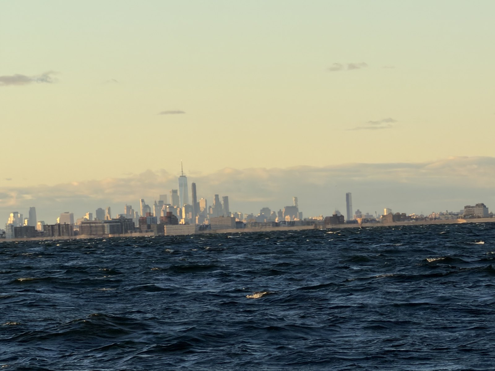
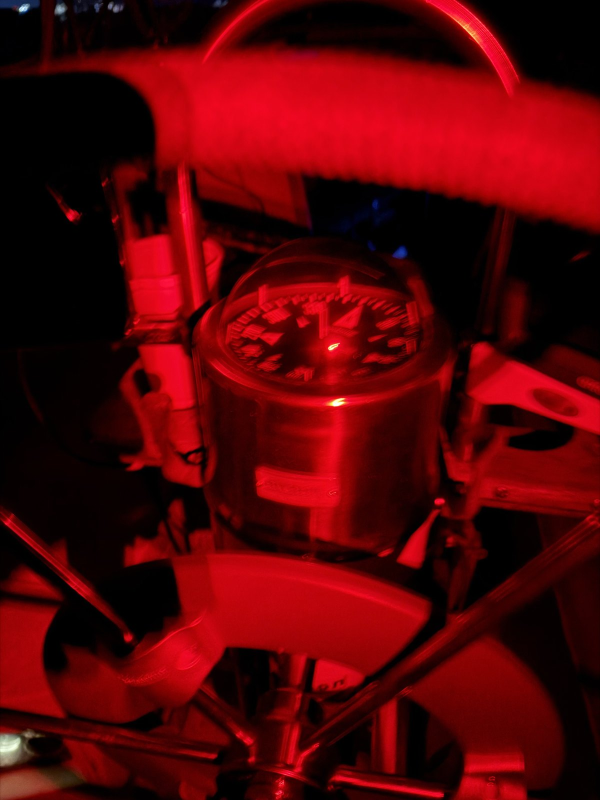
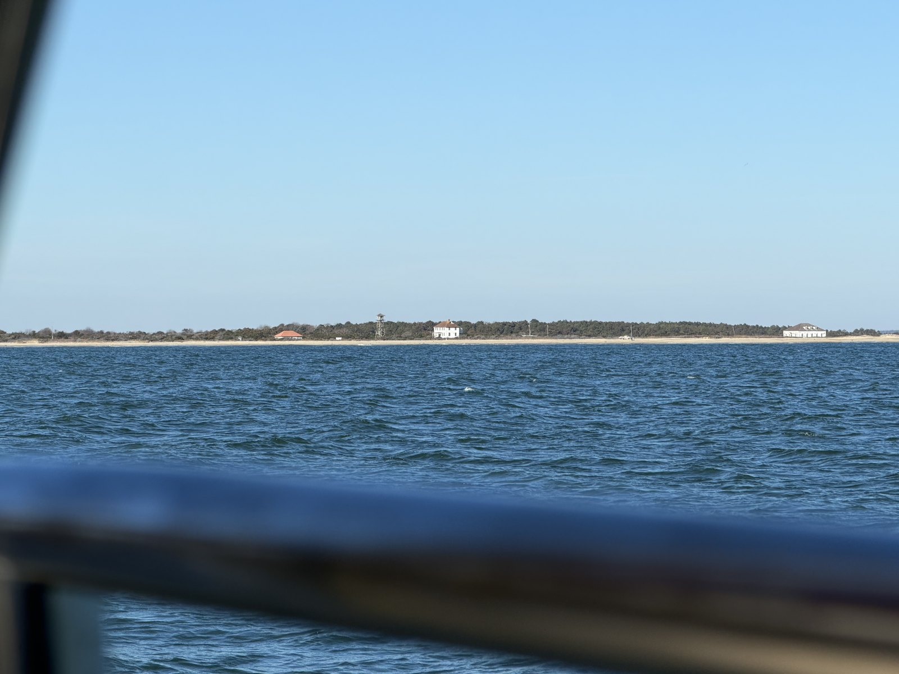
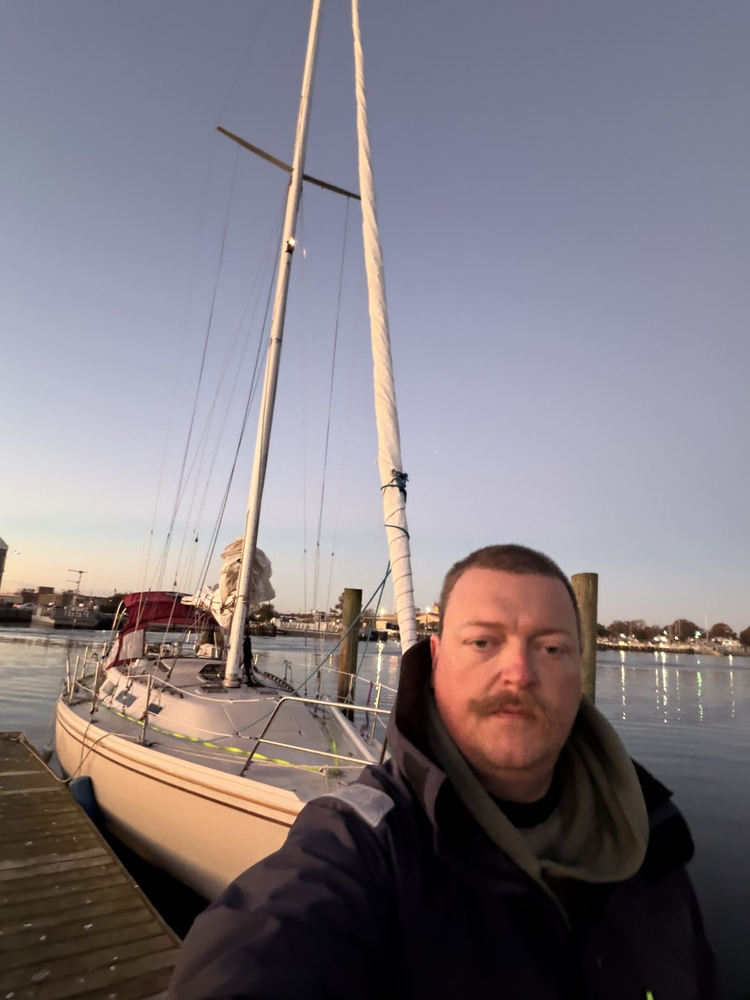

NEXT BOAT WORK
Back to Norfolk
Repair the fuel system and finish sorting the autopilot. Prepare Big Trouble for the next leg toward Jacksonville when the boat, crew, and conditions are ready.
CAPTAIN’S LOG · BIG TROUBLE
A 1984 Catalina 36 Mk I. A delivery that became a lesson. The repairs, decisions, and family plans that come next.
THE JOURNEY SO FAR
This is where I’ll keep the running account of Operation Wake: the boat work, the passages, the things that go wrong, and what we learn along the way. The family journey starts with the work in front of us.
Our first passage was supposed to take Big Trouble from Long Island to Jacksonville. Weather and mechanical trouble changed that plan. This first account ends in Norfolk, with repairs and the next leg still ahead.
First account: September 28–November 19, 2026 · Published November 25, 2026
THE CURRENT GAME PLAN
NEXT BOAT WORK
Repair the fuel system and finish sorting the autopilot. Prepare Big Trouble for the next leg toward Jacksonville when the boat, crew, and conditions are ready.
TRAINING ABOARD BIG TROUBLE
Use our Catalina 36 for seamanship and systems training, and earlier missions when properly equipped for the passage and crew. The Texas BBQ Run has a 2030 target; we’re cutting expenses and taking on extra work to be ready sooner if we can.
Explore Proving Grounds →THE FAMILY VOYAGE
Research a larger cruiser for our family of five, beginning with the Anchoring Mission. The Long Way Home connects Proving Grounds, The Patagonia Problem, and Beyond the Western Horizon, our planned family circumnavigation.
Follow the boat research →FIRST PASSAGE · SEPTEMBER–NOVEMBER 2026
Four days and four nights at sea aboard Big Trouble.
September 28
Around lunchtime, an email told me an auction was ending soon on a boat I'd been watching. When I opened it, there was one minute left, and the bid sat at $1.25. It was a 1984 Catalina 36.
I fooled around for a bit. Then I bid $51 even, and the countdown hit zero.
I was the proud owner of a boat.
October 9
After talking with the previous owner, I arranged a trip up to Long Island to inspect her. I expected the worst. What I found was a boat in reasonably good sailing condition. The water was staying on the correct side of the hull. The engine ran like it should. The sails were in good shape, and the rigging was sound, both standing and running. I also noticed the steering components were new.
When I talked with the owners, they told me they had been sailing her recently. Win, win.
I flew home to wait on the paperwork. Because she is documented, she needs a USCG Certificate of Documentation instead of a title, and those take time.
Early November
Shortly after, I learned the marina where she was housed was scheduled for demolition and rebuild. Big Trouble needed to go, and fast. I booked flights that day and arranged PTO from work.
November 13 and 14
I returned on the 13th with one goal: sail her to her new home marina in Jacksonville, Florida.
Friday and Saturday went to boat work. We installed a new autopilot system and a new VHF with AIS. The autopilot still needs work, but the radio was ready for the trip.
Sunday, November 15
We planned to leave by 8 a.m. We got out around 1 p.m.
Halfway down the channel toward the bay and the outlet to the Atlantic, the engine temperature alarm started going off. A quick check showed no water coming out of the exhaust. I figured the intake might be clogged, so I jumped in. After recovering from the shock of the cold northern Atlantic, I dove under and found the vent free of debris.
It was troubling, but not a deal-breaker, and there was nowhere to go back to. As long as I didn't rev the engine, it stayed within operating temperature. We slow-rolled out of the channel and put up a sail once we reached the bay.
By 4 p.m., we had cleared the Atlantic Beach Bridge and were headed out to the ocean.

I had been expecting winds of 14 to 18 knots, and that is about what we saw. Soon, though, the gusts hit the 20s and may as well have been sustained, and the sea picked up. The first six hours or so were rougher than I'd planned. Still, with both sails catching a solid northwest wind, we averaged 6.5 to 7 knots. No complaints there.
That first night, we put a reef in and pulled the foresail back some, which slowed us to about 5 knots. We watched the New York skyline and its lights pass us by.
Monday, November 16
Morning found us off New Jersey, and it was the best sailing of the entire trip. We held 7 to 7.5 knots in reasonably calm water as we hurtled past Atlantic City. Dolphins and whales were all around us most of the day. One whale surfaced 100 yards in front of us, moving in the same direction. We followed the "he's bigger" rule and adjusted course.
Then came the first real test.
We reached Cape May after dark, with a strong northwest wind pushing against the current. The sea got rowdy, and for the entire crossing of the cape we were in 6 to 8 foot waves that seemed to come from several directions at once. On the other side, the water calmed, and we worked our way down the Delaware coast.
Then came my second new experience. Until that point, we'd always had land in sight, and the lights of the houses told us where we were. Now the lights ended, and we began sailing by compass.

Tuesday, November 17
Four hours after sunrise, the wind died. I spent a few hours troubleshooting and found the raw water intake valve clogged with algae. Once I cleaned it out, the engine fired up and didn't overheat, so we motored on with no wind to sail.

Wednesday, November 18
As we neared Norfolk, I checked the weather because I was worried about Cape Hatteras. A storm coming over Florida had the Carolina coast in dark red for exactly when we'd be passing. I called my land crew, my wife, and asked her to find us a marina inside Oregon Inlet, near the turning point around North Carolina. She found one.
We motored on, still with no wind.
By 9 a.m., we were getting close to the inlet, so I called the marina. They told me the inlet was not passable, and two boats had already run aground. The Coast Guard confirmed it.
We had to turn around and beat upwind back toward Norfolk.
Then the engine died.
Fortunately, both the friend I'd brought along and I are mechanics. I started tacking up the coast while he dug into the engine. We quickly found that the original-equipment fuel system was sucking air, and every repair we made caused a new problem upstream. Sailing life.
Finally, we routed fuel around all the leaks and straight to the injector pump. It wasn't the best or smartest idea, but it was what we needed to do.
With the engine running, we made the rest of the 60-mile trip back to the Chesapeake in the dark and fog.
Thursday, November 19, 6 a.m.
We tied up at the marina at 6 a.m. Four days and four nights after leaving Long Island, Big Trouble was in Norfolk.
She rests there now, until I can get back up to repair the fuel system and sail her the rest of the way home.
Her name is Big Trouble, and she lived up to it. She is old and has been neglected, but her rigging and sails are sound, and the water stays on the outside of the hull. I can truly say she is a pleasure to sail, and I have no regrets so far.

STILL AHEAD
Getting the system ready for the next passage.
Returning to Norfolk and preparing to head south.
Bringing Big Trouble to her planned home marina.